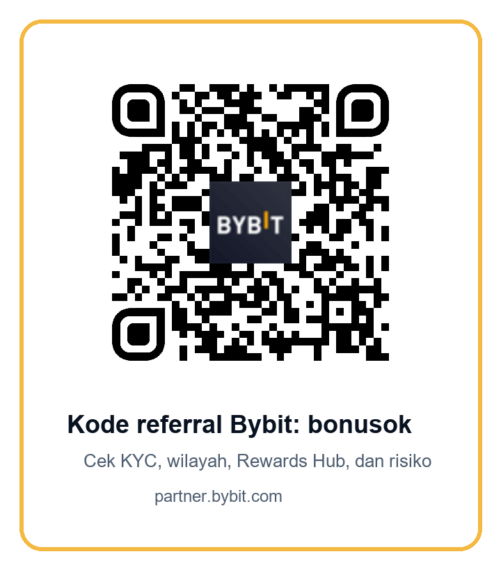

BYBIT BONUSOK INDONESIA
Kalkulator biaya trading Bybit IDR: kode referral bonusok untuk trader aktif
Gunakan halaman ini untuk menghitung biaya nyata sebelum membuka akun lewat kode referral Bybit bonusok: fee maker/taker, spread, slippage, kurs IDR/USDT, biaya keluar, dan jarak break-even yang harus ditembus pasar.
Kalkulator biaya IDR/USDT dan break-even spot
Banyak halaman referral hanya menulis “pakai kode bonusok” lalu langsung mendorong deposit. Untuk trader aktif, itu belum cukup. Pertanyaan pertama seharusnya: berapa persen pasar harus bergerak agar transaksi kecil Anda tidak habis oleh fee, spread, slippage, dan biaya keluar? Kalkulator ini sengaja dibuat sederhana, transparan, dan konservatif. Masukkan modal IDR, kurs USDT, estimasi fee, spread, slippage, dan biaya jaringan/withdrawal. Hasilnya bukan sinyal trading, melainkan batas minimum agar Anda tahu kapan sebuah setup terlalu mahal.
Gunakan angka yang lebih buruk daripada ekspektasi terbaik Anda. Jika order book sedang tipis, gunakan spread dan slippage lebih tinggi. Jika Anda belum tahu fee aktual akun, jangan menebak terlalu optimistis. Jika nilai transaksi kecil, biaya withdrawal bisa membuat break-even terlihat jauh lebih besar daripada fee trading saja. Itulah sebabnya trader yang disiplin selalu menghitung total friksi, bukan hanya “biaya 0,1%”.
Cara membaca hasil
Jika break-even hanya sekitar beberapa puluh basis poin, setup Anda masih perlu diuji terhadap volatilitas dan kedalaman order book, tetapi biaya belum tentu menjadi penghalang utama. Jika break-even melewati satu persen untuk trade spot pendek, Anda harus bertanya apakah target harga realistis setelah biaya. Jika break-even melewati dua persen pada modal kecil, biaya withdrawal atau spread mungkin terlalu besar untuk gaya keluar-masuk cepat.
Contoh: modal 5.000.000 IDR dengan kurs 16.500 menghasilkan sekitar 303 USDT. Dengan fee taker 0,10% per sisi, spread total 0,18%, slippage total 0,20%, dan biaya keluar 35.000 IDR, friksi total bisa mendekati 0,78% dari modal. Artinya harga perlu bergerak lebih dari angka itu hanya untuk pulang modal secara kasar. Jika Anda mengejar reward kecil tetapi harus membuat volume besar, masukkan juga risiko harga selama volume dibuat.
Kalkulator ini tidak menggantikan order book real-time. Sebelum klik buy/sell, tetap buka pair yang ingin Anda gunakan, lihat kedalaman di sekitar harga, pisahkan order besar menjadi bagian yang lebih kecil bila perlu, dan bandingkan biaya limit versus market. Untuk pemula, trade spot kecil lebih mudah diaudit daripada langsung memakai leverage. Untuk trader API, hasil kalkulator bisa menjadi batas minimum yang masuk ke jurnal setiap strategi.
Mengapa materi ini bukan panduan referral biasa
Riset SERP untuk kueri Indonesia seperti “kode referral Bybit”, “kode referal Bybit bonusok”, dan “biaya trading Bybit Indonesia” menunjukkan celah yang jelas: hasil organik yang terlihat banyak berupa halaman kode umum, halaman spam referral, atau artikel yang tidak menyelesaikan pertanyaan biaya nyata. Trader aktif tidak hanya mencari link. Ia ingin tahu apakah biaya total masuk akal untuk ukuran order, apakah reward bersyarat dapat diverifikasi, apakah wilayah dan KYC aman, dan apakah ada rute resmi yang tidak memaksa bypass.
Karena itu, eksperimen ini punya satu pekerjaan utama: mendorong first eligible spot trade yang lebih berkualitas. Pengguna yang mengisi kalkulator, membaca warning, mengecek CFX/OJK, lalu membuka referral link lebih mungkin menjadi pengguna yang paham risiko daripada pengunjung yang hanya mengejar bonus. Untuk bisnis referral jangka panjang, kualitas seperti ini lebih penting daripada klik kosong.
Bybit tetap bisa menarik bagi trader Indonesia karena kombinasi likuiditas global, spot market, Rewards Hub, API, dan fitur eksekusi lanjutan. Tetapi tidak semua fitur relevan untuk setiap orang. Halaman ini sengaja menempatkan kalkulator di awal agar keputusan dimulai dari ekonomi trade, bukan dari FOMO kampanye. Jika setelah dihitung break-even terlalu berat, keputusan terbaik bisa saja tidak trading.
Kelayakan Indonesia: cek CFX/OJK, KYC, dan wilayah sebelum deposit
Untuk konteks lokal, direktori resmi CFX yang diperiksa pada 16 Juli 2026 mencantumkan Bybit Indonesia / PT Enkripsi Teknologi Handal dengan nomor SPAB dan situs bybit.id. Ini bukan alasan untuk melewati proses verifikasi. Justru sebaliknya: pengguna Indonesia perlu memulai dari rute resmi yang tersedia untuk akun mereka, memakai data identitas yang benar, dan memastikan produk yang ingin digunakan memang tersedia secara legal dan operasional.
OJK juga menekankan bahwa pemasaran aset keuangan digital harus benar, tidak menyesatkan, transparan, menyertakan peringatan risiko/volatilitas, dan tidak menjanjikan imbal hasil tinggi atau pasti. Prinsip ini penting untuk materi referral. Karena itu halaman ini tidak mengatakan “bonus pasti cair” atau “trading pasti untung”. Rewards Hub Bybit sendiri menjelaskan bahwa reward bersyarat, dapat memiliki masa berlaku, membutuhkan verifikasi identitas, dan dapat gugur bila ada aktivitas tidak jujur atau penyalahgunaan.
Bybit memiliki daftar negara/wilayah yang dibatasi secara global. Daftar tersebut berubah dari waktu ke waktu dan mencakup beberapa yurisdiksi besar. Jika Anda berada di wilayah yang dibatasi, jangan memakai VPN, dokumen palsu, alamat pinjaman, atau akun orang lain untuk mencoba masuk. Representasi palsu dapat menyebabkan pembatasan akun, pembatalan reward, atau konsekuensi lain. Jika akun Anda diarahkan ke rute Indonesia, baca syarat resmi yang tampil di sana dan jangan mengandalkan artikel afiliasi sebagai sumber hukum.
Checklist aktivasi sebelum memakai kode bonusok
- Buka link resmi partner.bybit.com/b/bonusok dan pastikan kode bonusok terlihat pada alur pendaftaran.
- Pastikan Anda memakai identitas dan domisili nyata. Jangan gunakan VPN, false-KYC, akun pinjaman, atau metode bypass.
- Periksa apakah akun Anda diarahkan ke rute resmi yang sesuai untuk Indonesia dan baca syarat yang tampil di halaman resmi.
- Buka Rewards Hub setelah login. Catat tugas, tanggal kedaluwarsa, syarat deposit, syarat volume, jenis reward, dan batasan penarikan.
- Gunakan kalkulator di atas sebelum trade pertama. Jika break-even terlalu tinggi untuk strategi Anda, jangan memaksakan volume.
- Mulai dari ukuran kecil. Uji deposit, trade spot, biaya, settlement, dan withdrawal sebelum menaikkan modal.
- Jika memakai API atau bot, batasi izin API, nonaktifkan withdrawal permission, simpan log order, dan siapkan tombol berhenti.

Produk Bybit yang relevan untuk trader aktif, tanpa menjual mimpi
Spot trading adalah titik awal yang lebih masuk akal untuk halaman ini karena kalkulatornya berfokus pada biaya nyata order IDR/USDT menuju aset kripto. Namun trader aktif sering berkembang ke API, subaccount, dan pengelolaan risiko lebih kompleks. Bybit pernah menyorot RPI untuk API taker order dan dokumentasi SBE untuk alur data/eksekusi yang lebih efisien. Fitur seperti ini menarik untuk pengguna yang sudah mengukur latency, payload, order routing dan fill quality, tetapi tidak diperlukan oleh pemula yang belum memahami biaya dasar.
Bybit juga memperkenalkan AI Subaccount sebagai lingkungan eksekusi terisolasi untuk eksperimen berbasis AI. Cara membacanya bukan “AI akan menghasilkan profit”. Cara yang lebih sehat adalah “jika Anda menguji sistem otomatis, jangan campur semua saldo utama dengan eksperimen”. Subaccount, batas modal, izin API minimum, dan jurnal order adalah kontrol risiko, bukan pengganti strategi.
Rewards Hub bisa menambah alasan untuk mendaftar melalui referral, tetapi hanya jika syaratnya jelas untuk akun Anda. Ada reward yang tidak dapat ditarik langsung, ada kupon atau fee saver yang punya masa berlaku, dan ada tugas yang harus diklaim sebelum kedaluwarsa. Perlakukan reward sebagai bonus operasional bersyarat, bukan edge market. Edge market tetap berasal dari strategi, biaya rendah, disiplin posisi, dan kemampuan berhenti ketika setup buruk.
FAQ singkat untuk trader Indonesia
Apakah kode bonusok memberi bonus pasti?
Tidak. Kode referral membantu atribusi pendaftaran, tetapi reward bergantung pada aturan resmi yang tampil di akun Anda, status KYC, negara, produk, masa berlaku, tugas yang diselesaikan, dan kebijakan anti-penyalahgunaan. Perlakukan setiap angka “hingga” sebagai batas maksimum bersyarat, bukan janji pembayaran.
Apakah saya harus menggunakan VPN jika halaman tertentu tidak terbuka?
Tidak. Materi ini tidak mendukung VPN, false-KYC, alamat palsu, atau pinjam akun. Jika layanan tidak tersedia untuk wilayah, identitas, atau status akun Anda, keputusan yang benar adalah berhenti dan membaca sumber resmi, bukan mencari jalan pintas.
Mengapa halaman ini membahas biaya, bukan hanya referral?
Karena trader aktif menghasilkan nilai dari trading yang bertahan, bukan dari klik pertama saja. Jika seseorang memahami break-even, biaya keluar, reward bersyarat, dan risiko wilayah, ia lebih mungkin menjadi referral yang sehat: menyelesaikan KYC, melakukan trade pertama dengan ukuran masuk akal, dan tetap aktif bila platform memang cocok.
Produk mana yang sebaiknya dicoba dulu?
Untuk sebagian besar pengguna, spot kecil lebih mudah diaudit daripada produk kompleks. Setelah memahami biaya dasar, barulah pertimbangkan API, subaccount, atau fitur lanjutan. Jika Anda tidak bisa menjelaskan risiko produk dengan kata-kata sendiri, jangan gunakan modal besar.
Sumber resmi dan cara membaca halaman ini
Sumber resmi yang dipakai untuk menyusun materi ini meliputi daftar negara/wilayah terbatas Bybit, FAQ Rewards Hub Bybit, halaman anggota CFX yang mencantumkan Bybit Indonesia, dokumen pengumuman OJK tentang prinsip pemasaran aset keuangan digital, dan dokumentasi/announcement Bybit terkait API, RPI, SBE, dan AI Subaccount. Tautan sumber sengaja dibiarkan bersih, sedangkan link CTA komersial memakai skema referral/deep-link canonical.
- Bybit Service Restricted Countries
- Bybit Rewards Hub FAQ
- CFX members: Bybit Indonesia / PT Enkripsi Teknologi Handal
- OJK: prinsip pemasaran aset keuangan digital
- Bybit AI Subaccount announcement
- Bybit RPI liquidity for API taker orders
- Bybit SBE API documentation
Risk warning: materi ini bukan nasihat investasi, hukum, pajak, atau keuangan. Periksa biaya aktual, order book, aturan kampanye, status KYC, wilayah, dan regulasi lokal sebelum bertindak. Jangan trading dengan dana darurat atau memakai leverage hanya karena ada reward.